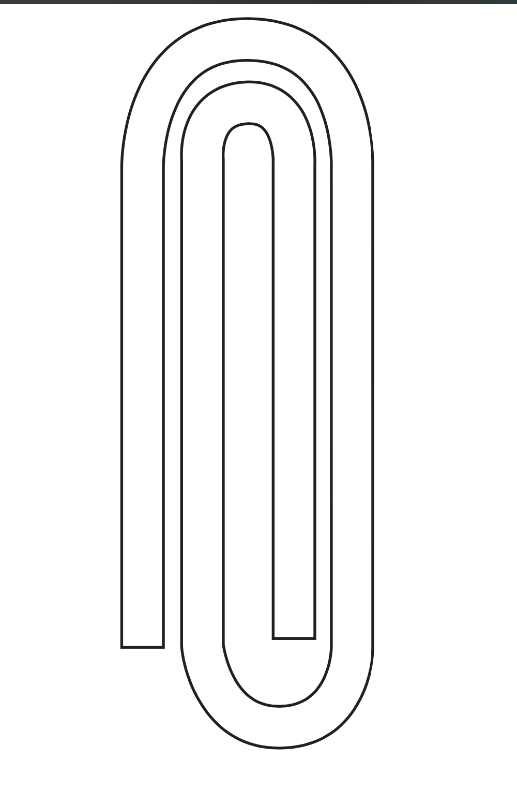
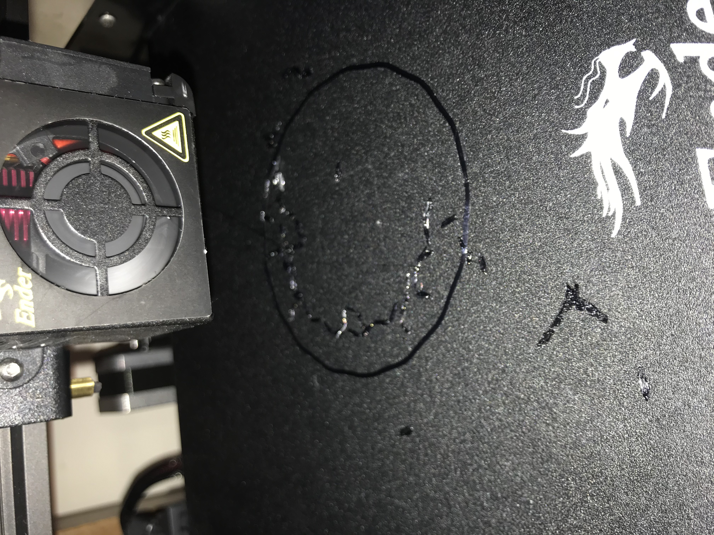
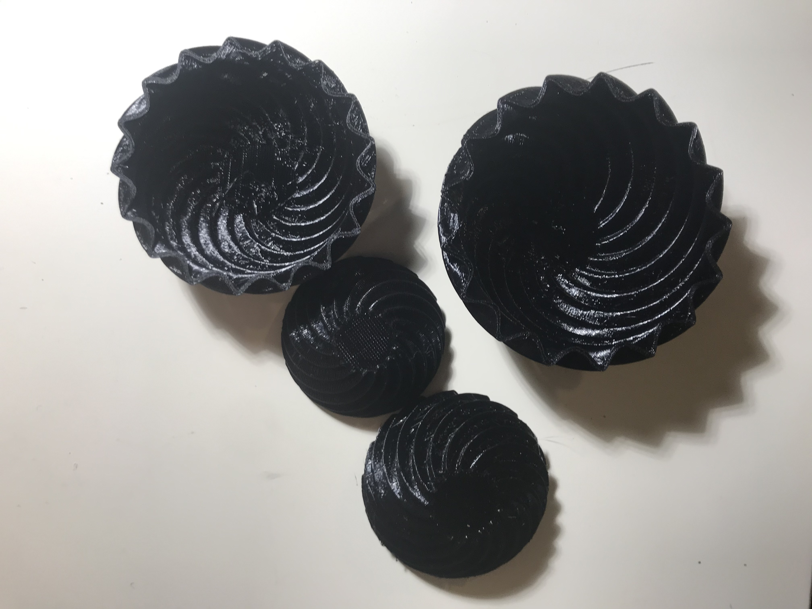

Part 1: Construction Kit
I told my roommate that I have to design clips for class and he said "what like paperclips" and I said "sure." I liked the aesthetic concept of a jumbo paperclip, and I thought I could use them functionally as chip bag clips or something in the future.
I started by designing a paperclip in illustrator.

I then imported the curve to Rhino and started up grasshopper. I used visual programming to extrude the curve and cap holes to make an object.

Clip One
I wasn't really sure how flexible the plastic was going to be once printed, so this first clip was mostly a trial run to prototype. I started with a clip about 9cm long and 2mm high. My plan if the clip was too flexible was to increase the paperclip height to make the plastic more durable. My plan if the clip was not flexible enough was to add an angle to the inner loop of the clip so it could better accommodate the height of 2 pieces of cardboard.
In testing the first clip, it turned out that it was too flexible and did not securely hold together the cardboard pieces.
Clip Two
I increased the height of the clip to 3mm using the number slider in grasshopper. I also changed the Cura slicer setting to make top/bottom pattern be concentric because I thought it would look better aesthetically.
This clip passed the shaking cardboard test!
Clip Three
I increased the height of the clip again to 4mm because I was curious if it would become too inflexible at that point. It was sturdier but was still able to clip the two cardboard pieces, so I actually liked this better than Clip 2.

Clips Four through Seven
Since I had already achieved my goal of securely clipping together two pieces of cardboard, I decided to experiment with different sizes of jumbo paperclips. I took my design for Clip 3 and scaled it uniformly at 75% (Clip 4), 50% (Clip 5), and 25% (Clip 6), then scaled just the x axis 50% (Clip 7).
Clip 6 turned out to be similar dimensions to an actual paperclip which was fun, but it and Clip 5 weren't strong enough to actually hold cardboard together. Clips 4 and 7 could hold cardboard, but I still preferred the sturdiness and jumbo-ness of Clip 3.
Clips Eight through Ten
I tried a couple of different xy scales while keeping the z size constant in order to maintain the sturdiness that I preferred from Clip 3. Clip 8 was 50%, Clip 9 was 75%, and Clip 10 was the same since I liked it. All three clips were able to hold cardboard together, although I noticed that Clip 8 had warped a little after holding the cardboard.
Part 2: Nested Objects
I thought it would be fun to make nested bowls for this portion of the assignment, which was to make some sort of nested object. My roommate said I could put marbles in them. I don't have any marbles but maybe that can be my next print.
Figuring out how to make a cool surface in Grasshopper
I wanted to make some sort of cool pattern on the surface of my bowls, but I wasn't really sure where to start since I'm pretty unfamiliar with the different commands and techniques in Grasshopper. I browsed through some tutorials on YouTube, and ended up using these two videos as reference for my bowl design:
Dome creation methods in Grasshopper
ARCH 231 - Parametric Vessel & 3D Transformations in Grasshopper
Test Print
I designed my bowl to print as a dome rather than as an upright bowl because this would make nested printing easier. But, I wasn't sure if the flat top of the dome would work out while printing so I decided to print just one small bowl as a test. I used the low quality print settings to speed up the process.

My first test was a big ol' mess. When designing in grasshopper I used an offset of my surface downwards to a 3d object. I didn't realize that the base that would be printed on the plate ended up being not a continuous line but a bunch of small lines. The small pieces of PLA didn't stick very well to the plate and ended up moving around everywhere. So I went to back grasshopper to figure out how to make the base smoother.
I ended up creating a scaled down version of the surface and then connecting them with boundary volume, which worked for the test print. I quite liked how the bowl turned out, and the flat base was able to print successfully. So I decided to go forward with nesting the object in grasshopper.
Nested Print
I scaled the bowl at 3 different sizes using a series in grasshopper before baking and exporting as an STL file.
I got a little worried a few layers into the print because I realized I might have made the edges of the bowl be so close together that the bowls might not come apart after printing. But I decided to keep the print going rather than start over because I wanted to see what happened.

In the end, the layers fit together like I wanted, and my bowls will definitely serve their purpose of holding marbles. The inside bottom of the bowls did not print as nicely as in the test print; they had some misplaced threads of PLA, I'm guessing because of how close the individual bowls were during printing. As an unintended bonus, my initial test bowl fits inside the smallest of my nested print set, so now I have a set of four nesting marble-holding bowls.